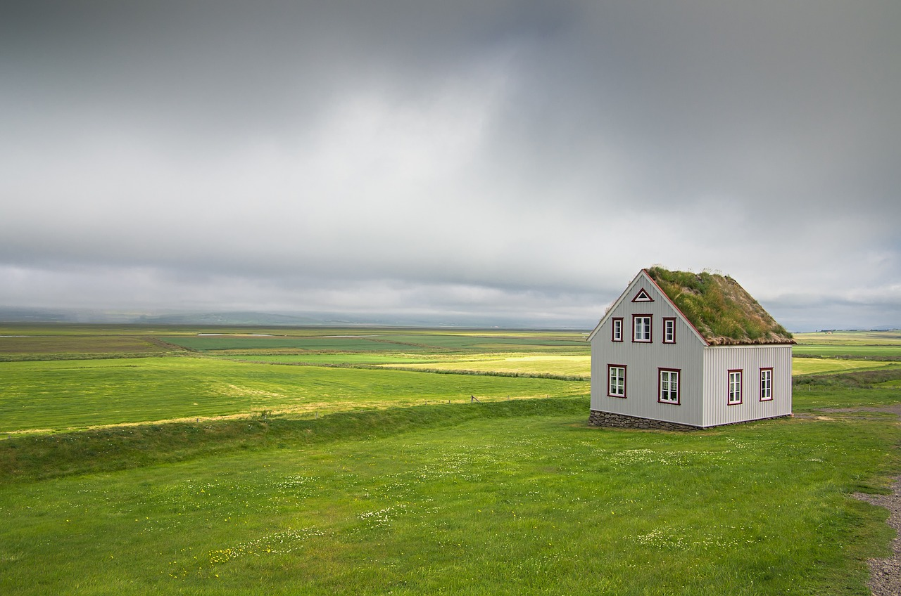
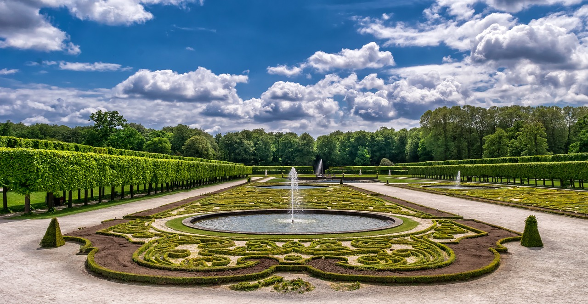
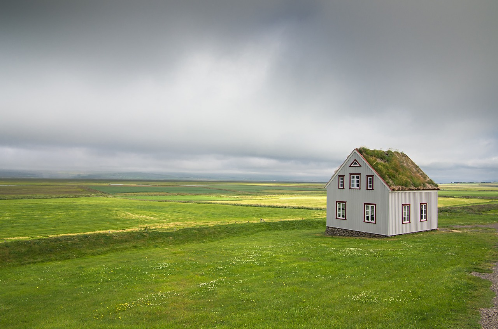
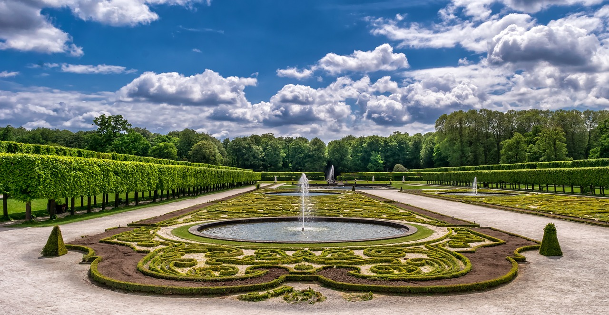

PEYZAJ
Konusuna göre resim türlerinden bir diğeri de peyzajdır. Mimarların ve dekoratörlerin yaptığı plan çalışmaları bu alanda önemlidir. Yakın ve arka olmak üzere en az 2 planda, anlatılmak istenen konu işlenmektedir. Ön planda olanlar daha büyük ve net iken geri planda kalanlar daha açıktır. Peyzajın bir diğer özelliği ise gökyüzünün oldukça önem arz etmesidir. Natürmortta olduğu gibi peyzajda da modeldeki bazı kısımları bilinçli olarak değiştirmek, sadeleştirmek veya abartmak gerekebilir. Çizgi ve renk perspektifi çok önemlidir. Derinlik, perspektif sayesinde verilir. En çok yapılan resim türlerinden biri olan peyzajda arka plana doğru renkler soluklaşmaktadır.
 


